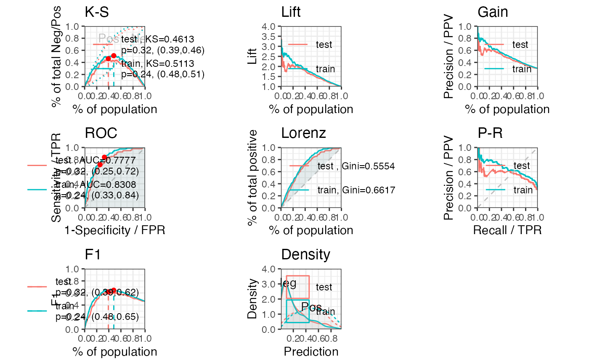

perf_eva calculates metrics to evaluate the performance of binomial classification model. It can also creates confusion matrix and model performance graphics.
perf_eva(pred, label, title = NULL, binomial_metric = c("mse", "rmse", "logloss", "r2", "ks", "auc", "gini"), confusion_matrix = FALSE, threshold = NULL, show_plot = c("ks", "lift"), pred_desc = TRUE, positive = "bad|1", ...)
Arguments
| pred | A list or vector of predicted probability or score. |
|---|---|
| label | A list or vector of label values. |
| title | The title of plot. Defaults to NULL. |
| binomial_metric | Defaults to c('mse', 'rmse', 'logloss', 'r2', 'ks', 'auc', 'gini'). If it is NULL, then no metric will calculated. |
| confusion_matrix | Logical, whether to create a confusion matrix. Defaults to TRUE. |
| threshold | Confusion matrix threshold. Defaults to the pred on maximum F1. |
| show_plot | Defaults to c('ks', 'roc'). Accepted values including c('ks', 'lift', 'gain', 'roc', 'lz', 'pr', 'f1', 'density'). |
| pred_desc | whether to sort the argument of pred in descending order. Defaults to TRUE. |
| positive | Value of positive class. Defaults to "bad|1". |
| ... | Additional parameters. |
Value
A list of binomial metric, confusion matrix and graphics
Details
Accuracy = true positive and true negative/total cases
Error rate = false positive and false negative/total cases
TPR, True Positive Rate(Recall or Sensitivity) = true positive/total actual positive
PPV, Positive Predicted Value(Precision) = true positive/total predicted positive
TNR, True Negative Rate(Specificity) = true negative/total actual negative = 1-FPR
NPV, Negative Predicted Value = true negative/total predicted negative
See also
Examples
# \donttest{ # data preparing ------ # load germancredit data data("germancredit") # filter variable via missing rate, iv, identical value rate dt_f = var_filter(germancredit, "creditability")#> [INFO] filtering variables ...# breaking dt into train and test dt_list = split_df(dt_f, "creditability") label_list = lapply(dt_list, function(x) x$creditability) # woe binning ------ bins = woebin(dt_list$train, "creditability")#> [INFO] creating woe binning ...# converting train and test into woe values dt_woe_list = lapply(dt_list, function(x) woebin_ply(x, bins))#> [INFO] converting into woe values ... #> [INFO] converting into woe values ...# glm ------ m1 = glm(creditability ~ ., family = binomial(), data = dt_woe_list$train) # vif(m1, merge_coef = TRUE) # Select a formula-based model by AIC m_step = step(m1, direction="both", trace=FALSE) m2 = eval(m_step$call) # vif(m2, merge_coef = TRUE) # predicted proability pred_list = lapply(dt_woe_list, function(x) predict(m2, type = 'response', x)) # scorecard ------ card = scorecard(bins, m2) # credit score, only_total_score = TRUE score_list = lapply(dt_list, function(x) scorecard_ply(x, card)) # credit score, only_total_score = FALSE score_list2 = lapply(dt_list, function(x) scorecard_ply(x, card, only_total_score=FALSE)) ###### perf_eva examples ###### # Example I, one datset ## predicted p1 perf_eva(pred = pred_list$train, label=dt_list$train$creditability, title = 'train')#> $binomial_metric #> $binomial_metric$train #> MSE RMSE LogLoss R2 KS AUC Gini #> 1: 0.1519266 0.3897776 0.4578621 0.2779502 0.5003279 0.8267473 0.6534946 #> #> #> $pic #> TableGrob (1 x 2) "arrange": 2 grobs #> z cells name grob #> 1 1 (1-1,1-1) arrange gtable[layout] #> 2 2 (1-1,2-2) arrange gtable[layout] #>## predicted score # perf_eva(pred = score_list$train, label=dt_list$train$creditability, # title = 'train') # Example II, multiple datsets ## predicted p1 perf_eva(pred = pred_list, label = label_list, show_plot = c('ks', 'lift', 'gain', 'roc', 'lz', 'pr', 'f1', 'density'))#> $binomial_metric #> $binomial_metric$train #> MSE RMSE LogLoss R2 KS AUC Gini #> 1: 0.1519266 0.3897776 0.4578621 0.2779502 0.5003279 0.8267473 0.6534946 #> #> $binomial_metric$test #> MSE RMSE LogLoss R2 KS AUC Gini #> 1: 0.1731937 0.4161655 0.522526 0.1717874 0.4421992 0.7714991 0.5429981 #> #> #> $pic #> TableGrob (3 x 3) "arrange": 8 grobs #> z cells name grob #> 1 1 (1-1,1-1) arrange gtable[layout] #> 2 2 (1-1,2-2) arrange gtable[layout] #> 3 3 (1-1,3-3) arrange gtable[layout] #> 4 4 (2-2,1-1) arrange gtable[layout] #> 5 5 (2-2,2-2) arrange gtable[layout] #> 6 6 (2-2,3-3) arrange gtable[layout] #> 7 7 (3-3,1-1) arrange gtable[layout] #> 8 8 (3-3,2-2) arrange gtable[layout] #>## predicted score # perf_eva(score_list, label_list) ###### perf_psi examples ###### # Example I # only total psi psi1 = perf_psi(score = score_list, label = label_list) psi1$psi # psi data frame#> variable dataset psi #> 1: score train_test 0.03371411psi1$pic # pic of score distribution#> $score#># Example II # both total and variable psi psi2 = perf_psi(score = score_list, label = label_list) # psi2$psi # psi data frame # psi2$pic # pic of score distribution ###### gains_table examples ###### # Example I, input score and label can be a list or a vector g1 = gains_table(score = score_list$train, label = label_list$train) g2 = gains_table(score = score_list, label = label_list) # Example II, specify the bins number and type g3 = gains_table(score = score_list, label = label_list, bin_num = 20) g4 = gains_table(score = score_list, label = label_list, method = 'width') # }